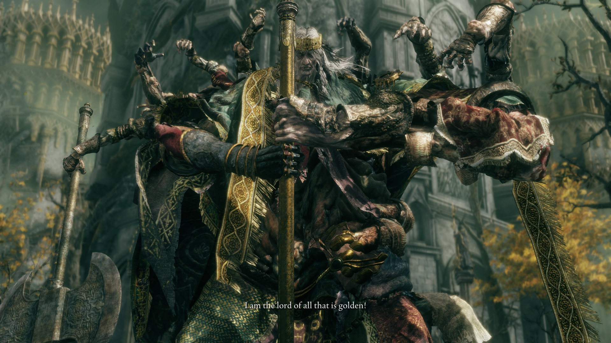

Elden Ring, FromSoftware tarafından oluşturulan Souls türünün yeni örneği olarak karşımıza çıktı. Bu yeni oyunun iskelet yapısı Souls oyunlarına sıkı sıkıya bağlı olsa da, getirdiği yeni dinamikler ve hepsinden önemlisi açık dünya işleyişi ile türün yeni sıçraması olarak görülebilir. Oyunu deneyim etmeye başladığınız ilk andan itibaren aslında eklenen tüm yeni özellikleri sanki yıllardır bu seride kullanıyormuş gibi hissediyorsunuz. Bu durum FromSoftware'ın yeni oyununda birçok yeniliğe imza attığından çok, aslında tüm bu yenilikleri mevcut sisteme çok iyi bir şekilde adapte ettiğinin göstergesi olmuş.

Elden Ring hikaye olarak Souls oyunlarında olduğu gibi bir işleyiş ile karşımıza çıkıyor. Fakat hem sunum hem de hikaye detaylarının dağılımı daha açıklayıcı ve görsellikle süslenen bir şekilde tasarlanmış. Kullanılan ara sahneler, bazı karakterlerin odak noktası ve karşılaştığınız NPC'lerin kendi hikayeleri oyun alanına güzel bir şekilde dağıtılmış. Alalade karşılaştığınız ve önemli görmediğiniz bir karakterin hikayesinde bile çok farklı detaylar ve dallanan bir görev yapısı ile karşılaşabiliyorsunuz. Bu görev sistemi kimi zaman sizi yerden yere vuran bir boss mücadelesine sürüklerken kimi zaman da dramatik bir şekilde son bulabiliyor.
Lands Between'e adım attığımız anda aslında Souls türünün acımasız gerçekleri yüzümüze vuruyor. Karşılaştığımız ilk hareket eden karakterden bir güzel sopa yedikten sonra aslında işleyişin klasik Souls oyunlarında işlediği gibi olduğunu anlıyoruz.Yani oyunun uçsuz bucaksız bir dünyası olsa da aslında dayak yediğiniz bölgelere ya da sizi tokatlayan boss mücadeleleriyle sonradan yüzleşmeniz gerektiğini anlamanız doğal olarak uzun sürmüyor. Açık dünyanın getirisi ile oyun daha geniş bir kitleye yayıldığı gibi kolaylık anlamında da bazı güzel dokunuşlar yapılmış.